Physical Implementations
Quantum Logic Gates
Quantum computers use logic gates in a similar way to classical computers. They lay the foundations of quantum circuits. Unlike classical logic gates, all quantum logic gates must be reversible. This is due to a property in quantum mechanics called unitarity. This is because the probability of all possible outcomes should remain one after every operation.
Phase Shift Gates
These gates leave the ∣0≻ state unchanged and converts the ∣1≻ to eiθ∣1≻. 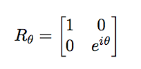
Pauli Gates -
| Pauli-X Gate | Pauli-Y Gate | Pauli-Z Gate |
|---|---|---|
| 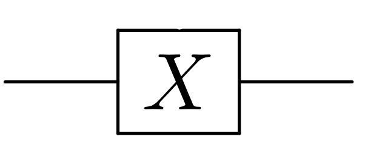 | 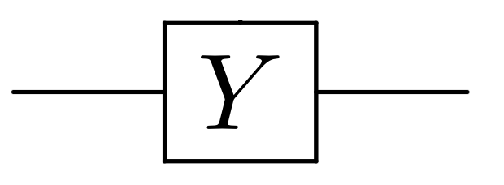 | 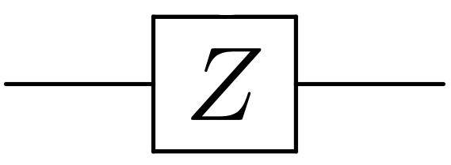 |
| This acts on a single qubit which maps ∣0≻ to ∣1≻ and ∣1≻ to ∣0≻. This gate rotates the Bloch sphere(qubit) around the X-axis by pi radians. The Pauli X gate is equivalent to the classical NOT gate | This gate rotates the Bloch sphere around the Y-axis by pi radians. It maps ∣0≻ to i∣1≻ and ∣1≻ to -i∣0≻. | This gate rotates a qubit around the Z axis by pi radians. It leaves ∣0≻ state unchanged and maps ∣1≻ to -∣1≻. This is a a phase shit gate with x = π. |
| 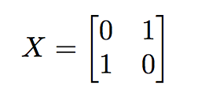 | 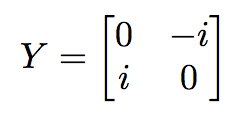 | 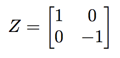 |
SWAP Gate

A swap gate takes 2 inputs and swaps them around and outputs them.
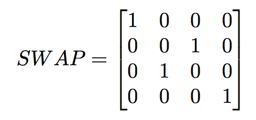
Toffoli Gate

The Toffoli gate is a universal reversible gate. This means that any reversible logic gate can be constructed from a combination of Toffoli gates. It is also called the Controlled-Controlled Not Gate.
It takes a 3 qubit input and returns a 3 qubit output. The first two bits are control bits and only when they are both a 1 the third bit is inverted.
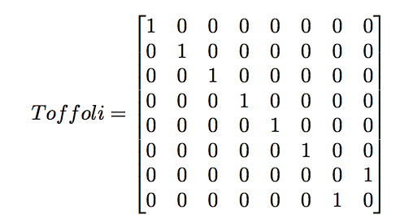
Controlled Gates -
These gates perform actions on two or more gates where one or more gates act as a control. A few examples of such gates are as follows -
| Controlled Not Gate | Controlled U Gate | Controlled SWAP Gate (Fredkin Gate) |
|---|---|---|

|

|

|
|
This gate acts on two qubits and perform a not operation on the second qubit only if the first qubit is a one. |
The Controlled U Gate is a generalized version of the CN gate. | The Fredkin gate is a universal revisible gate which has three inputs and three outputs. This gate swaps the second and third qubits only if the first qubit is a 1. It has been anounced in early 2016 that a quantum fredkin gate has been built. |
| 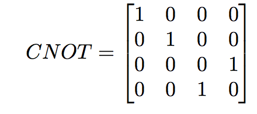 | 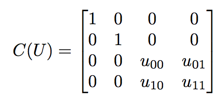 | 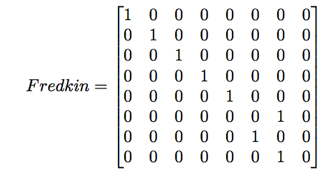 |
Some quantum logic gates such as the CN, CCN and CEX gates can exist in classical computing. The CEX takes a 3 qubit input and returns a 3 qubit output. This gate performs an XOR operation on the second and third qubits when the first qubit is a 1 otherwise the output is the same as the input.
Ion Trap Quantum Computers
Ion Traps are at the forefront of quantum computing as they satisfy most of Divincenzo’s Criteria.
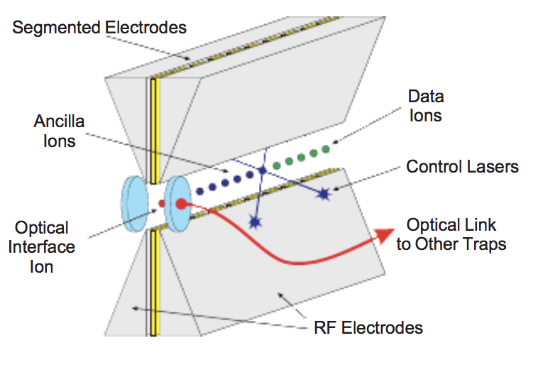
Lasers are a key part of the ion trap quantum computers as they are used for state preparation and manipulation of ions. The ions are initialised using a process called optical pumping. This process uses light to excite the electrons in an ion from a lower energy level to a higher energy level(a well defined quantum state).
In order to detect ions, a photo-multiplier tube (PMT) and an electron multiplied charged coupled device (EM-CCD) camera are used. These two devices detect the light produced by the ions. The PMT is faster than the EM-CCD at detecting the ions but the EM-CCD offers the resolution of individual ions. State detection of the electronic qubit can be achieved by the electron-shelving technique. The electron shelving technique measures the probability of the ion to be in one of the qubit states.
However, one of the main problems of Ion-Trap Quantum Computing is Scalability. When trying to perform multi-qubit operations, the ions form a chain and by adding more and more ions together, the chains get heavier but the coupling strength decreases. This means that the time taken for gate operations is longer and it is quite hard to cool all ions to the ground state. A few of the proposed solutions into fixing the scalability is to use multiple ion traps with fewer icons and couple them together. One of the proposed solutions is to use a quantum-charge-coupled-device which moves ions between memory and the area where all the interactions take place by changing the electric fields.
In order to transport quantum information, One of the proposed solutions is to use photons as carriers. This method would require mapping of quantum information from an ion to a photon. Cavity QED experiments have shown promising results in coupling photons and atomic states.
Another way is to transport quantum informations to move ions from one trap to another trap. This requires a very fast variation and precise control of the trapping voltages. In the experiments conducted so far, it is believed that moving ions from one trap to another is as fast as a gate operations(100ms). The problem with this method is that we cannot use low-pass filters to reduce electrical noises which could lead to heating of ions.
Optical Quantum Computing -
Optical Quantum computing is one of the promising ways of physically implementing a quantum computer as it links quantum communication and quantum computing together. Single photons are free of noise and decoherence which a major advantage which other systems have to accommodate when making calculations and error corrections. The photons can be encoded in different ways and can be converted from one encoding to another.
Some of the hardware used in optical quantum computing are phase shifters, beam splitters.
A phase shifter is made of transparent material which has a refractive index that is different from free space (Free space refractive index ~ 1.00). A beam splitter is made out of semi-reflective mirror which partially reflects the light that falls on the mirror and transmits the rest. In order to measure the qubits, we can use photon detectors. There are many types of beam splitter but the two main ones are number resolving photon detectors which measures how many qubits there are and the bucket detector which gives a binary output telling us if there are zero qubits or many qubits present.
For an Optical quantum computer to become a reality, it must have a universal set of logic gates. The problem arises when a two qubit operation needs to be performed as photons generally do not interact with each other. The KLM protocol (Knill, Laflamme and Milburn) uses single photons to create two qubit gates.
The KLM protocol requires the use of non-deterministic quantum gates which means that the probability of success for a circuit with N gates is p^N where p is the probability of success of a single gate. So in order to make sure we need to repeat the process p^-n. This is a problem as the time required to compute this would grow exponentially. In order to fix this, we can fix by using quantum teleportation. We can prepare a probabilistic gate offline and teleport back the successful event to the quantum circuit. By preparing probabilistic gates (such as the Controlled Phase gate) offline and we don’t destroy the quantum information on the qubit when a probabilistic gate fails.
In order to faithfully transmit flying qubits between specified locations, we would need incorporate error correction to ensure that photon loss doesn’t occur. Transmitting qubits is at the heart of quantum cryptography and key distribution protocols. By using quantum cryptography, we can prevent counterfeiting by using photons to create money. Due to the uncertainty principle, one cannot measure accurately the photons and therefore cannot counterfeit money. Using this principle we can use photons to transmit messages securely.